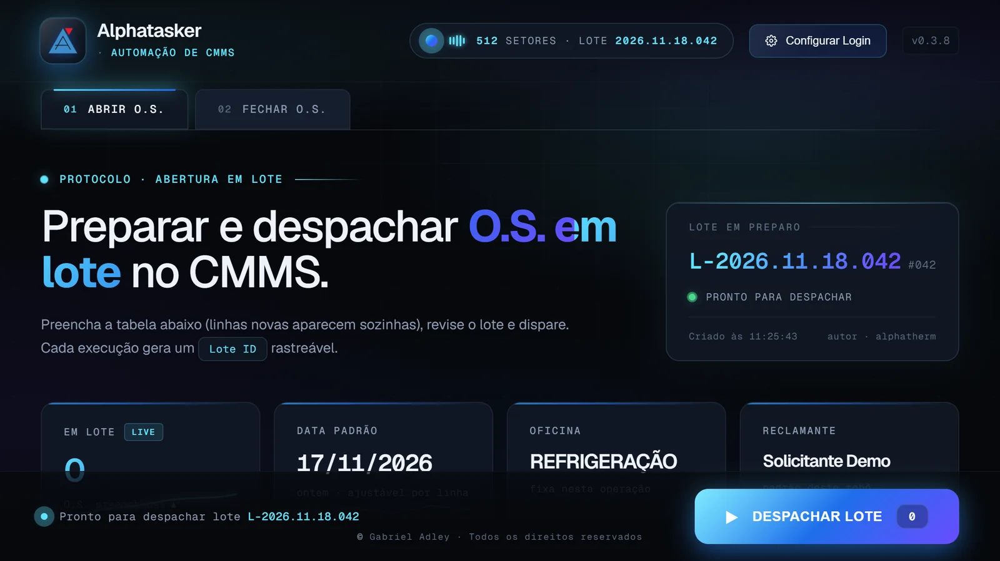

Alphatasker
A Windows desktop robot that turns a long, repetitive web form into a spreadsheet-style grid and one button: it creates dozens of work orders in a single run, spacing their start times automatically.
Um robô desktop para Windows que transforma um formulário web longo e repetitivo numa grade estilo planilha e um botão: abre dezenas de ordens de serviço de uma vez, espaçando os horários sozinho.

Opening orders one by one, timing them by hand.
Abrir ordens uma a uma e calcular horário na mão.
Each work order meant filling the same long form in a web system: sector, occurrence, cause, type, date and start time. Start times had to follow rules per order type, calculated in the operator's head. A day's batch took a long time and mistakes were common.
Cada ordem significava preencher o mesmo formulário longo num sistema web: setor, ocorrência, causa, tipo, data e horário. Os horários seguiam regras por tipo de ordem, calculadas de cabeça. O lote do dia demorava e errar era comum.
Fill a grid, click once.
Preencha a grade, clique uma vez.
Spreadsheet-style grid
Grade estilo planilha
Accent-insensitive autocomplete over 500+ sectors, pickers for occurrence, cause and type, and a new row that appears as you finish the last one.
Autocompletar sem acento em mais de 500 setores, seletores de ocorrência, causa e tipo, e uma linha nova que aparece quando você termina a anterior.
Scheduling rules
Regras de horário
The first order of each day starts at 08:00 and the next start time is spaced automatically by order type.
A primeira ordem de cada dia começa às 08:00, e o horário seguinte é espaçado sozinho conforme o tipo da ordem.
Live monitor
Monitor ao vivo
Progress for every order, with pause, restart and stop, while the browser runs visibly so the operator can follow along.
Progresso de cada ordem, com pausar, reiniciar e parar, com o navegador visível para o operador acompanhar.
Own driver resolver
Resolvedor de driver próprio
Detects the installed Edge version, downloads the matching driver and caches it, with fallbacks, so browser updates never break the bot.
Detecta a versão do Edge instalado, baixa o driver correspondente e guarda em cache, com alternativas, para atualização do navegador nunca quebrar o robô.
Orchestrator + worker
Orquestrador + worker
The bot runs apart from the UI, which talks to it through a JS ↔ Python bridge. The WebView2 runtime ships inside the installer.
O robô roda separado da interface, que conversa com ele por uma ponte JS ↔ Python. O runtime do WebView2 vai junto no instalador.
Encrypted credentials
Credenciais criptografadas
Login data is encrypted locally and typed only once. Same auto-update and release pipeline as Alphaneo.
O login fica criptografado no computador e é digitado uma vez só. Mesmo pipeline de auto-atualização e release do Alphaneo.
Source code is private; the GitHub page hosts the installer and releases.
O código é privado; a página no GitHub hospeda o instalador e os releases.